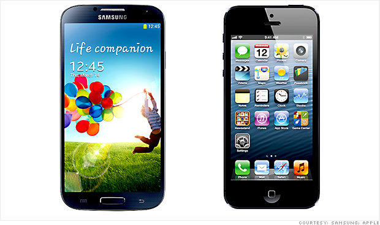
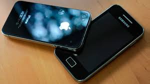

.jpg) |
.jpg) |
Un teléfono inteligente (smartphone en inglés) es un teléfono móvil construido sobre una plataforma informática móvil, con una mayor capacidad de almacenar datos y realizar actividades semejantes a una minicomputadora, y con una mayor conectividad que un teléfono móvil convencional. El término «inteligente», que se utiliza con fines comerciales, hace referencia a la capacidad de usarse como un ordenador de bolsillo, y llega incluso a reemplazar a un ordenador personal en algunos casos.
|  |  |
Generalmente, los teléfonos con pantallas táctiles son los llamados teléfonos inteligentes.
|
|
Entre otros rasgos comunes está la función multitarea, el acceso a Internet vía Wi-Fi o red 3G, función multimedia (cámara y reproductor de videos/mp3), a los programas de agenda, administración de contactos, acelerómetros, GPS y algunos programas de navegación, así como ocasionalmente la habilidad de leer documentos de negocios en variedad de formatos como PDF y Microsoft Office.